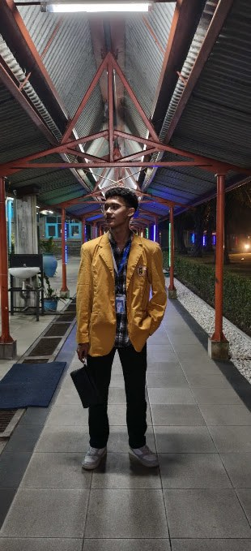
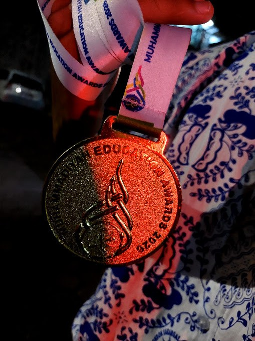

Berkas Pribadi · No. 001/XII-ITCP1/2026
Khaudri Muhammad
Zafrullah
akrab disapa “Azif”
“Berusaha jadi lebih baik.”

Foto 3x4
Berkas 01
Tentang Saya
Saya memulai pendidikan di SD Negeri 261 Surabaya, melanjutkan ke SMP Muhammadiyah 14 Karangasem, dan kini menyelesaikan jenjang SLTA di MA Muhammadiyah 01 Paciran sebagai siswa kelas XII ITCP 1.
Perjalanan itu membentuk saya menjadi pribadi yang suka mengamati, mencoba hal baru, dan terus memperbaiki diri — sejalan dengan motto yang saya pegang: berusaha jadi lebih baik.
Di luar jam sekolah, saya menekuni dunia teknologi dan pemrograman, khususnya robotika dan pengembangan web. Saya juga senang mengabadikan momen lewat fotografi dan videografi, mulai dari pengambilan gambar hingga proses penyuntingannya.
SD
SD Negeri 261 Surabaya
SMP
SMP Muhammadiyah 14 Karangasem
SLTA
MA Muhammadiyah 01 Paciran
Berkas 02
Minat & Keahlian
Dua dunia yang saya tekuni: logika pemrograman yang presisi, dan visual yang bercerita lewat kamera.
Robotika
Merancang dan merakit sistem robotik, mulai dari logika kontrol hingga pengujian langsung di ajang kompetisi.
Lihat GaleriWeb Development
Membangun tampilan dan fungsi sebuah situs web, dari struktur halaman hingga interaksi penggunanya.
Lihat GaleriFotografi
Menangkap momen lewat bidikan kamera, memperhatikan komposisi, cahaya, dan cerita di balik gambar.
Lihat GaleriVideografi
Merekam dan menyusun potongan gambar bergerak menjadi sebuah cerita visual yang utuh.
Lihat GaleriKeterampilan
Berkas 03
Prestasi & Pengalaman
Prestasi

Medali Emas · MEA 2026
Medali Emas — Kompetisi Robotika
Meraih medali emas pada cabang robotika, hasil dari proses merancang dan menguji sistem robotik langsung di ajang kompetisi tingkat madrasah.
Sertifikat D1 — Universitas Muhammadiyah Malang
Menyelesaikan dan lulus ujian jenjang D1 di Universitas Muhammadiyah Malang, sekaligus bukti kesiapan menghadapi tantangan akademis di luar bangku sekolah menengah.
Pengalaman Organisasi
Organisasi Astronomi
Ketua Bidang Observasi dan Pendidikan
Mengoordinasikan kegiatan pengamatan langit dan program edukasi astronomi bagi anggota organisasi.
IPM — Ikatan Pelajar Muhammadiyah
Ketua Bidang PIP (Pengkajian Ilmu Pengetahuan)
Memimpin bidang yang berfokus pada pengkajian ilmu pengetahuan, merancang kegiatan yang mendorong budaya belajar dan diskusi di lingkungan pelajar.
Berkas 04
Rencana Masa Depan
Setelah menyelesaikan jenjang SLTA, saya berencana melanjutkan pendidikan ke Universitas Islam Negeri Sunan Ampel (UINSA) Surabaya, mengambil jurusan Hukum Syariah.
Ketertarikan saya pada logika dan sistem yang selama ini saya bangun lewat pemrograman dan robotika, ingin saya arahkan pada bidang yang berkaitan langsung dengan keadilan dan penegakan hukum. Cita-cita saya adalah menjadi seorang hakim.
Universitas
UINSA Surabaya
Program Studi
Hukum Syariah
Cita-cita
Hakim
Berkas 05
Kontak
Terbuka untuk diskusi seputar teknologi, robotika, maupun sekadar menyapa.
Cara tercepat untuk menghubungi saya:
zafr.ast14@gmail.com
Kirim EmailTautan media sosial dapat ditambahkan di sini kapan saja, sesuai kebutuhan dan privasi.